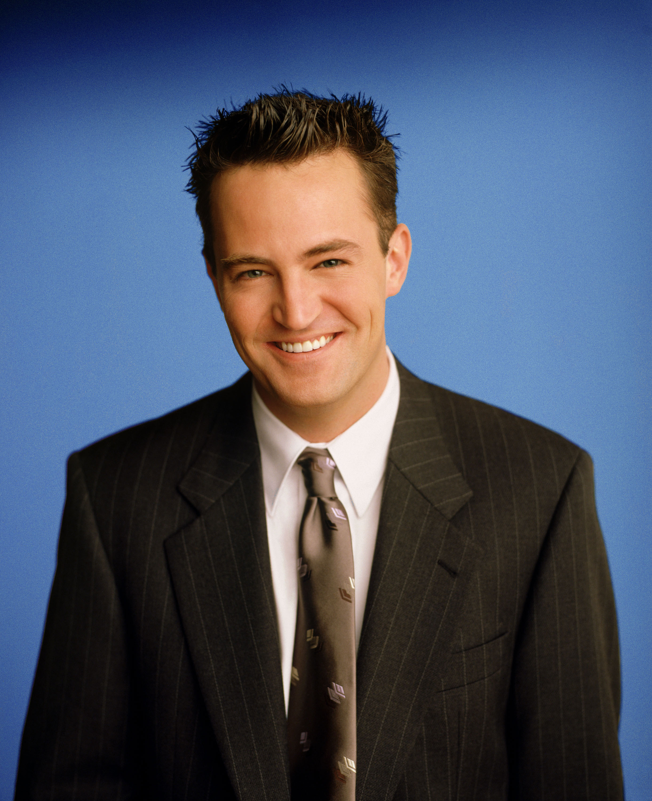

Chandler Bing foi um processador de dados (emprego
esse desconhecido pelos seus amigos) e odiava esse
trabalho até que, na 9ª temporada, ele finalmente
teve coragem de se demitir para trabalhar com publicidade
(trabalho de que ele gostava de verdade). Ele é o mais
cômico dos personagens, e conhecido por seu humor
sarcástico.
É questionado sobre sua sexualidade e tem um pai travesti,
o que aumenta ainda mais os rumores sobre sua sexualidade.
Sua mãe é uma famosa escritora de romances adultos. Seu
relacionamento mais longo, antes do casamento com Monica
Geller, foi com a irritante Janice, eternamente conhecida
pela velha e inconfundível frase: "Oh... my... God!". O
namoro com Janice finalmente acabou na 3.ª temporada.
